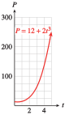

Subsection 2.4 Graph of the Inverse Function
In Example 2.3.10, we used a graph of \(h\) to read values of \(h^{-1}\text{.}\) But we can also plot the graph of \(h^{-1}\) itself. Because \(C\) is the input variable for \(h^{-1}\text{,}\) we plot \(C\) on the horizontal axis and \(F\) on the vertical axis. To find some points on the graph of \(h^{-1}\text{,}\) we interchange the coordinates of points on the graph of \(h\text{.}\) The graph of \(h^{-1}\) is shown at right.
| \(C=h(F)\) | \(F=h^{-1}(C)\) | |||
| \(F\) | \(C\) | \(\hphantom{00000}\) | \(C\) | \(F\) |
| \(14\) | \(-10\) | \(-10\) | \(14\) | |
| \(32\) | \(0\) | \(0\) | \(32\) | |
| \(50\) | \(10\) | \(10\) | \(50\) | |
| \(68\) | \(20\) | \(20\) | \(68\) | |
Example 2.4.12.
The Park Service introduced a flock of \(12\) endangered pheasant into a wildlife preserve. After \(t\) years, the population of the flock was given by
- Graph the function on the domain \([0, 5]\text{.}\)
- Find a formula for the inverse function, \(t = f^{-1}(P)\text{.}\) What is the meaning of the inverse function in this context?
- Sketch a graph of the inverse function.
The graph of \(f\) is shown at right, with \(t\) on the horizontal axis and \(P\) on the vertical axis.
- We solve \(P = 12 + 2t^3\) for \(t\) in terms of \(P\text{.}\)\begin{equation*} \begin{aligned}[t] 2t^3 \amp = P - 12\amp\amp \blert{\text{Substract 12 from both sides.}}\\ t^3 \amp = \frac{P - 12}{2}\amp\amp \blert{\text{Divide both sides by 2.}}\\ t \amp = \sqrt[3]{\frac{P - 12}{2}}\amp\amp \blert{\text{Take cube roots.}} \end{aligned} \end{equation*}The inverse function is \(t = f^{-1}(P) =\sqrt[3]{\dfrac{P - 12}{2}}\text{.}\) It tells us the number of years it takes for the pheasant population to grow to size \(P\text{.}\)
-
The graph of \(f^{-1}\) is shown below, with \(P\) on the horizontal axis and \(t\) on the vertical axis.

Checkpoint 2.4.13.
The formula \(T = f(L) = 2\pi \sqrt{\dfrac{L}{32}}\) gives the period in seconds, \(T\text{,}\) of a pendulum as a function of its length in feet, \(L\text{.}\)
- Graph the function on the domain \([0, 5]\text{.}\)
- Find a formula for the inverse function, \(L = f^{-1}(T )\text{.}\) What is the meaning of the inverse function in this context?
- Sketch a graph of the inverse function.

\(L = f^{-1}(T ) =\dfrac{8}{\pi^2} T^2.~~~~~~\) \(~f^{-1}\) gives the length of a pendulum as a function of its period.
See graph for part(a).